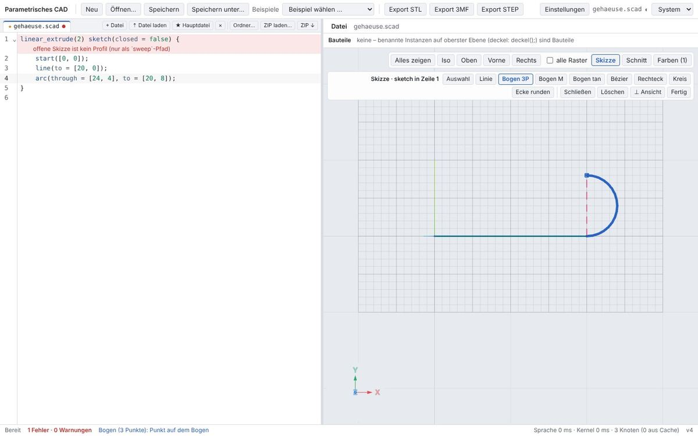

Entwurf zur Abstimmung, Stand 24.10.2026. Betrifft Browser und Tauri gleichermaßen.
Keine neuen Funktionen, nur Ordnung, Gewichtung und einheitliche Bedienelemente. Fragen an dich auf der letzten Seite.
Entscheidung (24.10.2026): alle Vorschläge (jeweils A) angenommen.
Akzentfarbe nicht Blau, sondern Teal/Smaragdgrün (z. B. hell #0f766e, dunkel #3cc4a8; genaue Werte nach Kontrastprüfung).
Die Entwürfe unten zeigen noch das alte Blau.
1. Befund
Kopfleiste: 10+ gleich gewichtete Textknöpfe; „Zuletzt“/„Beispiele“ als graue Beschriftung mit breiten Auswahllisten; drei getrennte Export-Knöpfe; bei 1440 px wird „Einstellungen“ abgeschnitten.
Drei Knopfgrößen nebeneinander (Kopfleiste 28 px, Dateileiste 22 px, Bauteil-Export 18 px), verschiedene Ränder und Abstände.
Dateileiste im Editor: „+ Datei, Datei laden, Hauptdatei, ×, Ordner…, ZIP laden…, ZIP ↓“ – sieben kleine Knöpfe, mal neben, mal unter den Tabs.
Zwei Infozeilen über der Ansicht („Datei …“, „Bauteile … STL 3MF STEP … Alle: ZIP …“) kosten Höhe und mischen Anzeige mit Export.
Ansichtsleiste: Ansichten, Raster-Checkbox und Modi (Schnitt, Farben, Skizze) gemischt; bricht um, rechtsbündig schwebend; Unterleisten (Schnitt, Skizze) erscheinen an verschiedenen Stellen mit eigener Breite.
Skizzen-Werkzeuge nur als Text, ohne Gruppen; „Fertig“ sieht aus wie jedes andere Werkzeug.
Seitenpanel nur für Farben; Messen hätte keinen Platz.
Ist-Zustand (Tauri, dunkel, Farben-Panel offen).
Schnitt-Leiste unter der Ansichtsleiste.

Skizzen-Leiste: 13 Textknöpfe in zwei Zeilen.
2. Regeln
Thema
Regel
Knopfarten
Primär (gefüllt, höchstens einer je Bereich: „Speichern“, „Fertig“) · Standard (Rahmen) · Leise (ohne Rahmen, für Werkzeugleisten) · Umschalter (aktiv = Akzent-Hintergrund).
Größen
Eine Höhe: 26 px. Nur Symbolknöpfe quadratisch 26 × 26. Radius 6 px überall.
Gruppen
2 px innerhalb einer Gruppe, Trennstrich + 12 px zwischen Gruppen. Exklusive Wahl (Ansicht, Modus) als Segmentschalter.
Symbole
Einfache Strich-Symbole 15 px mit Tooltip inkl. Tastenkürzel; Text nur bei wichtigen oder seltenen Aktionen. Beispiele hier selbst gezeichnet; im Produkt z. B. Lucide (ISC-Lizenz).
Selten Genutztes
In Menüs (▾) statt eigener Knöpfe: Dateiaktionen, Export-Varianten, Bauteil-Export.
Kontextleiste
Optionen des aktiven Modus (Schnitt, Skizze, Messen) immer an derselben Stelle: links oben in der Ansicht, unter der Werkzeugleiste.
Themen
Nur bestehende Token; Fokusring sichtbar; Kontraste weiter per contrast.test.ts geprüft.
Knopfarten und Gruppen (hell / dunkel)
SpeichernStandardLeiseRasterIsoObenVorneRechts
SpeichernStandardLeiseRasterIsoObenVorneRechts
3. Kopfleiste
Vorschlag: Datei-Menü, Dateiname mittig, Export als geteilter Knopf
„Datei“ bündelt Neu, Öffnen, Ordner, Zuletzt, Speichern unter, Hinzufügen, ZIP. Der Export-Knopf merkt sich das zuletzt gewählte Format. Thema (hell/dunkel/System) als ein Symbolknopf mit Menü. Die Zeile „Datei …“ über der Ansicht entfällt (Name steht in der Kopfleiste).
4. Gesamtlayout
Vorschlag hell: Tabs ohne Dateiknöpfe, eine Werkzeugleiste in der Ansicht, Seitenpanel mit Reitern
Bereit0 Fehler · 0 WarnungenSprache 1 ms · Kernel 229 ms · 75 Knoten
Editor: nur Tabs; „+“ am Ende öffnet Neu/Laden; Rechtsklick auf Tab: Als Hauptdatei, Umbenennen, Schließen.
Ansicht: links der Modus (Modell, Schnitt, Skizze, Messen – genau einer aktiv), rechts Kamera und Anzeige (Einpassen, Ansicht ▾ mit Iso/Oben/Vorne/Rechts …, Raster, Röntgen/Ghost). Klickbarer Ansichtswürfel unten rechts statt Achsenkreuz (Option, Frage 4).
Seitenpanel rechts, ein- und ausklappbar, Reiter Bauteile (Sichtbarkeit, Volumen, Export im ⋯-Menü) und Farben (heutiges Panel). Die Zeile „Bauteile …“ über der Ansicht entfällt. Messergebnisse bekommen hier später einen eigenen Reiter.
Dasselbe dunkel, Modus „Schnitt“ aktiv: Kontextleiste links unter der Werkzeugleiste
ModellSchnittSkizzeMessen
Iso▾
XYZBlickz =16
5. Kontextleisten
Skizze: Werkzeuge in Gruppen, Bogen-Arten im Untermenü, „Fertig“ als Primärknopf
sketch · Zeile 5▾Fertig
Bogen durch 3 PunkteA
Bogen um Mittelpunkt⇧ A
Tangentialer BogenT
Tooltips mit Tastenkürzel: Auswahl V, Linie L, Bogen A, Bézier B, Rechteck R, Kreis C, Ecke runden F, Schließen Enter, Löschen Entf, ⊥ Ansicht N. Das aktive Werkzeug steht zusätzlich in der Statuszeile.
Messen (für den nächsten Auftrag, nur Platz und Bedienung): Messart wählen, Ergebnis in der Ansicht und im Reiter „Messen“
AbstandRadiusWinkelIm Schnitt
⌀ 6,00 mm · Achse z
6. Umfang und Prüfung
Gemeinsame Bausteine Button, IconButton, Segmented, Menu, Toolbar in web/src/app/ui/; alle Leisten darauf umstellen. Keine Funktion entfällt, alles bleibt per Tastatur erreichbar.
Playwright-Selektoren über Rollen/Namen (aria-label statt Knopftext); bestehende Szenarien bleiben grün; Bildvergleich hell/dunkel bei 1280, 1440 und 1920 px, kein Umbruch und kein Abschneiden.
Testbericht mit Vorher/Nachher-Bildern je Bereich.
7. Fragen an dich
1. Symbole oder Text? ASymbole + Tooltip in Werkzeugleisten, Text nur bei Modus, Speichern, Export, Fertig (Vorschlag) ·
BSymbol + Text überall (breiter) · Cnur Text, aber einheitlich
2. Dateiaktionen und Export in Menüs? A„Datei ▾“ + geteilter Export-Knopf (Vorschlag) · BÖffnen/Speichern bleiben als Knöpfe sichtbar, Rest ins Menü
3. Bauteile und Farben im Seitenpanel? ASeitenpanel mit Reitern, einklappbar; Zeilen über der Ansicht entfallen (Vorschlag) · BBauteile bleiben als schmale Zeile über der Ansicht